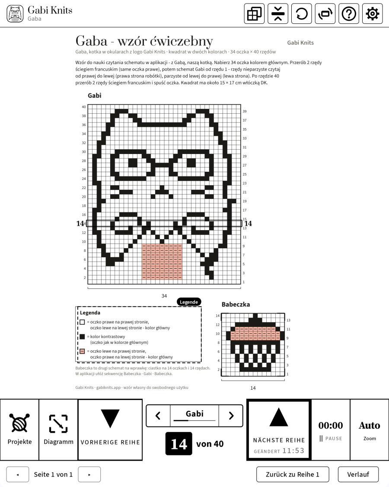
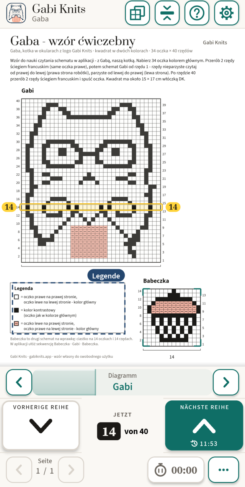
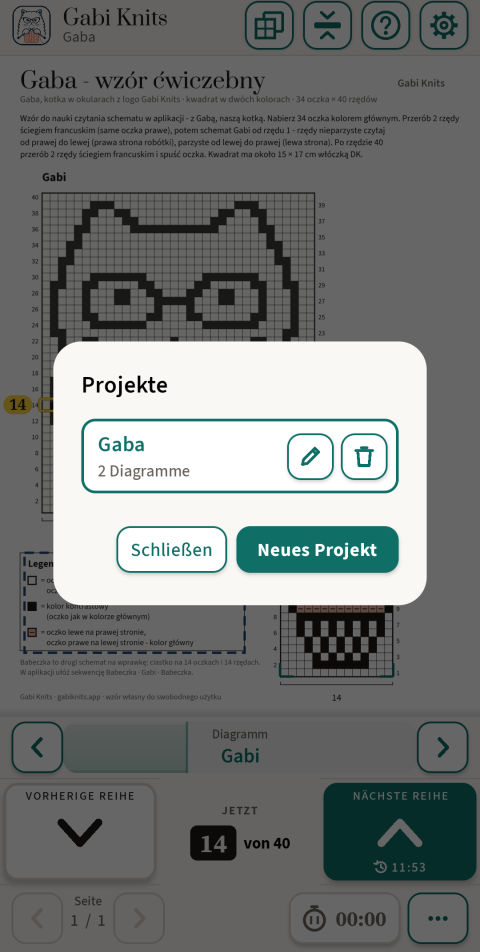
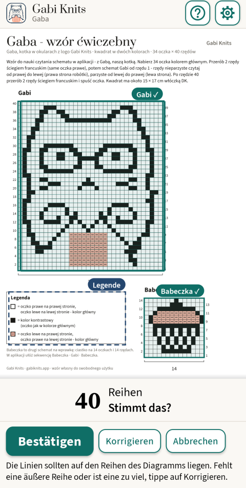
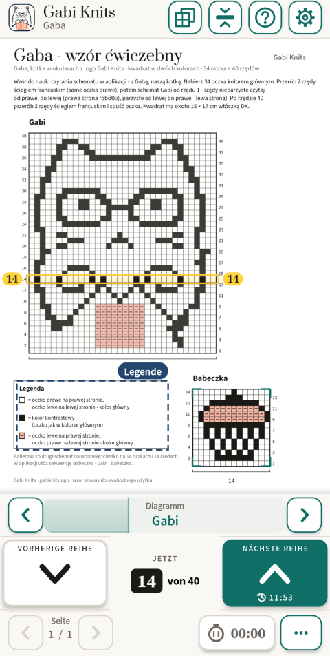
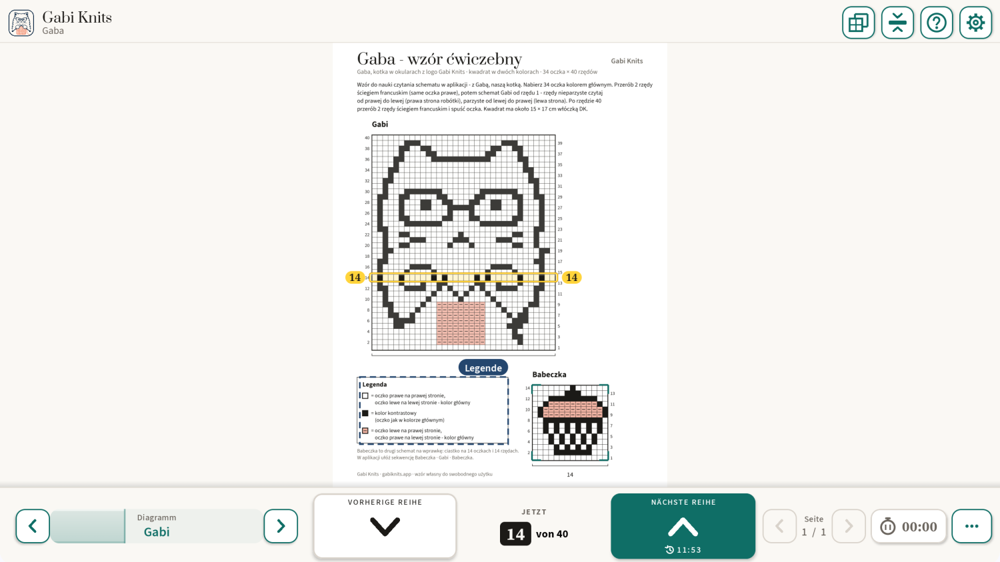

Die App für Strickdiagramme
Du weißt immer, welche Reihe dran ist.
Öffne eine PDF-Anleitung und tippe auf das Diagramm – Gabi Knits findet die Reihen selbst und markiert deutlich die, die du gerade strickst. Eine große Taste bringt dich zur nächsten Reihe, und dein Fortschritt speichert sich von allein.
- Kein Konto
- Keine Werbung
- Funktioniert ohne Internet


Findet das Diagramm selbst
Tippe auf das Diagramm auf der Seite, und die App findet Rahmen und Reihen von allein. Du prüfst nur und bestätigst.
Die Reihe immer im Blick
Die aktuelle Reihe ist deutlich markiert, mit der Nummer auf beiden Seiten. Eine große Taste „Nächste Reihe“, bequem mit einer Hand.
Gemacht für E-Ink
Schwarz auf Weiß, keine Animationen, große Tasten und Reihennummern – von der ersten Version an für BOOX-Tablets entworfen.
Für BOOX E-Ink-Tablets
Von Anfang an für E-Ink entworfen
Gabi Knits ist auf einem BOOX Note Air entstanden, und dort wird jede Version getestet. Auf E-Ink bleibt der Bildschirm ruhig: Schwarz auf Weiß, nichts bewegt sich, nichts hängt von Farbe ab. Auf Handys und normalen Tablets nutzt dieselbe App Farbe und flüssige Bewegung.
Dicker Rahmen statt Farbe
Die aktuelle Reihe bekommt einen kräftigen schwarzen Rahmen – gut zu erkennen auf dem Schwarz-Weiß-Bildschirm.
Keine Animationen
Seiten und Reihen wechseln in einem Schritt. Auf dem E-Ink-Bildschirm gleitet und verblasst nichts.
Große Tasten und Zahlen
Große Reihentasten und Reihennummern, die du über dem Strickzeug lesen kannst.
Getestet auf dem BOOX Note Air
Läuft auf BOOX-Tablets mit Google Play, im Hoch- und im Querformat.
So geht’s
In drei Schritten vom PDF zu den Nadeln.

Öffne deine PDF-Anleitung
Tippe auf „Projekte“, dann auf „Neues Projekt“, und wähle die Datei. Das Projekt bekommt einen eigenen Namen und merkt sich, wo du bist.

Tippe auf das Diagramm
Gabi Knits findet Rahmen und Reihen des Diagramms und lässt sie dich kurz prüfen. Die Ränder kannst du von Hand anpassen.

Stricke Reihe für Reihe
Die aktuelle Reihe ist deutlich markiert, der Zähler zeigt „Reihe 14 von 40“. „Nächste Reihe“ geht weiter, „Vorherige Reihe“ zurück.
Was die App kann
Nur was dir durch die Reihe hilft – nichts, was stört.
Abfolge
Lege fest, in welcher Reihenfolge du die Diagramme strickst, zum Beispiel Muffin · Gabi · Muffin. In der letzten Reihe wechselt „Nächste Reihe“ von selbst zum nächsten Diagramm und seiner Seite.
Die Legende griffbereit
Markiere die Legende der Anleitung einmal. Sie öffnet sich mit einem Tippen über der Seite, und deine Reihe bleibt, wo sie ist.
Mehrere Diagramme in einer Anleitung
Jedes Diagramm merkt sich seine Reihe. Du wechselst mit den Pfeilen ‹ › in der Leiste am Reihenzähler – ein Tippen, die Seite bleibt frei – oder mit dem schwebenden Widget.
Reihe in der Bildschirmmitte
Das Diagramm bewegt sich unter einer festen Leiste, so bleibt die Reihe, die du strickst, in der Mitte des Bildschirms.
Strickzeit
Sieh, wie lange ein Projekt gedauert hat. Die Uhr läuft nur, wenn du sie einschaltest – auch bei Projekten ohne Diagramm.
Geführt durchs erste Projekt
Beim ersten Start führt dich ein kurzes Tutorial Schritt für Schritt durch die Übungsanleitung „Gaba“ – die Katze Gabi mit Brille und einen Muffin.
Fortschritt speichert sich selbst
Jedes Projekt merkt sich Seite, Diagramme, Reihen und Strickzeit. Der Reihenverlauf zeigt deine letzten Schritte, und „Zurück zu Reihe 1“ beginnt ein Diagramm neu.
Sechs Sprachen
Deutsch, Englisch, Polnisch, Norwegisch, Dänisch und Schwedisch.
Auf E-Ink, Handy und Tablet
Eine App mit eigenem Layout für jeden Bildschirm. Hoch- oder Querformat, Zoom von 100 bis 500 % oder Auto, und die Seite lässt sich drehen, wenn ein Diagramm quer liegt.

Deine Anleitungen bleiben bei dir
Deine PDF-Anleitungen, Projekte und Reihennummern bleiben auf deinem Gerät. Die App nutzt das Internet nur, um einen Kauf abzuwickeln und deinen Zugang zu prüfen – ohne Verbindung strickst du einfach weiter.
Datenschutzerklärung lesen- Kein Konto
- Keine Werbung
- Kein Tracking, keine Analyse
- Funktioniert ohne Internet
Fragen
Brauche ich ein Konto?
Nein. Keine Registrierung, keine Anmeldung. Käufe laufen über dein Google-Play-Konto.
Funktioniert die App ohne Internet?
Ja. Anleitungen lesen und stricken brauchen nie Internet. Eine Verbindung ist nur zum Kaufen und ab und zu zur Bestätigung des Abos nötig.
Auf welchen Geräten läuft sie?
Android 8.1 oder neuer: Handys, Tablets und BOOX E-Ink-Tablets mit Google Play.
Welche Anleitungen passen?
PDF-Anleitungen mit einem Diagramm auf einem Raster. Getestet mit Dutzenden DROPS-Diagrammen; Raster und Reihen findet die App selbst, die Ränder kannst du von Hand korrigieren.
Was geht ohne Kauf?
Projekte anlegen, Anleitungen öffnen, Seiten durchblättern und Diagramme markieren. Reihe für Reihe mit markierter Reihe stricken erfordert den kostenlosen Test oder einen Kauf.
Ich habe ein neues Handy. Zahle ich noch einmal?
Nein. Installiere Gabi Knits mit demselben Google-Konto und tippe auf „Käufe wiederherstellen“.
Wie kündige ich das Abo?
In Google Play: Zahlungen und Abos → Abos. Deine Projekte bleiben, wo sie sind.
Gibt es eine Version für iPhone oder iPad?
Noch nicht – zuerst kommt Android.

Fragen oder Ideen?
Schreib uns – zu einer Anleitung, die nicht funktioniert, zu einer Idee für die App oder mit einer Frage vor dem Start. Wir lesen jede Nachricht.
contact@gabiknits.app